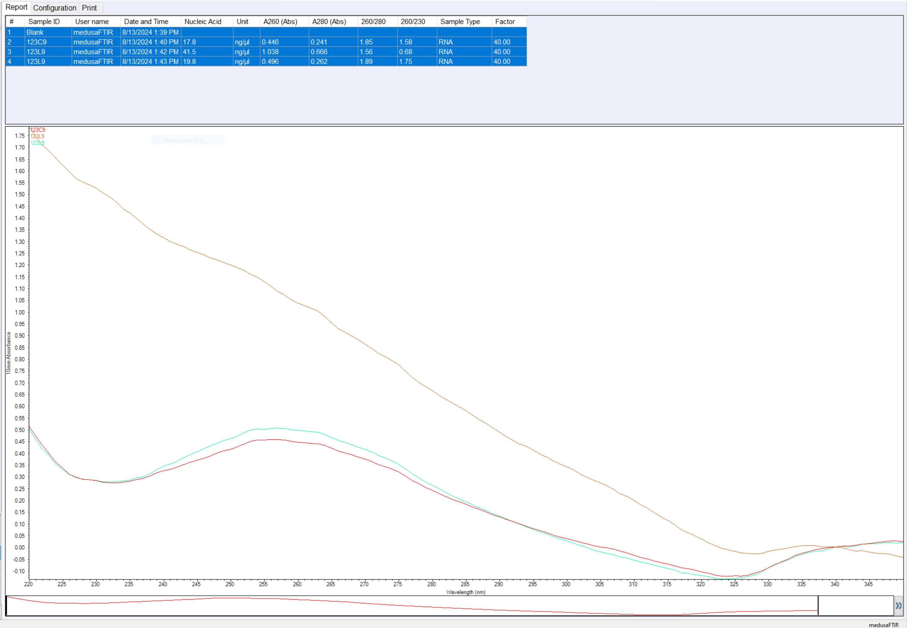

Samples
1C9F, 2C9F, 3C9F = 123C9F
- 2 min Qiagin Tissue Disruption Tubes
1L9F, 2L9F, 3L9F = 123L9F
- 2 min Zymo BashingBead Lysis Tubes
1M9F, 2M9F, 3M9F = 123M9F
- 1 min of 1/3 of single Zymo BashingBead Lysis Tube split into microcentrifuge sample tubes
Summary
Success! I pooled 3 samples together and this yielded enough RNA!
I also tested 3 different lysing protocols, and all worked more or less the same. I skipped the Proteinase K digestion as per the ‘cells’ sample prep instruction in the kit manual. I think I can add this back in if I’m finding protein impurities in the eluted RNA.
Extraction Notes
date: 13-AUG-2024
kit: Zymo Quick-DNA/RNA Miniprep Plus Kit
Thaw samples to room temp
Vortex to mix
Centrifuge at 500xg for 1 minute to get rid of any bubbles
Remove 400uL of
DNA/RNA ShieldsupernatentAdd 400uL of DNA/RNA Lysis Buffer
Vortex to mix for 5 seconds
Check to see that embryos have dissolved
Embryos weren’t totally lysed, and there was at least visible cell debris in each tube… I called Zymo and they suggested I try:
Adding more DNA/RNA Lysis Buffer & Mixing until supernatent is clear
Using BeadBashing Tubes to ensure Lysis
Trying PK Digestion without BeadBashing
I ended up trying 3 different things:
With 123C9 I transferred the 500uL of sample in DNA/RNA Shield and DNA/RNA Lysis Buffer to the Qiagin Tissue Disrupter Tube & set it in the mortexer for 2 minutes. This created a clear supernatent, and didn’t involve adding any DNA/RNA Lysis Buffer volume. The Qiagin Tissue Disrupteer is also a solid single bead, so I didn’t need to worry about sucking up any tiny glass beads into the pipette when I did transfer the supernatent to the spin column.
With 123L9 I transferred the 500uL of sample in Shield and Lysis Buffer to the Zymo 0.1-0.5mm BeadBashing Lysis Tubes, & set in mortexer for 2 minutes, then centrifuged at 16,000xg for 1 minute. I then added 600uL more of DNA/RNA Lysis Buffer and centrifuged again at 16,000xg for 1 minute. I transferred 600uL of the cleared supernatent from each tube sequentially through the filter (being careful to leave ~500uL of volume in the tube so as not to disrupt/suck up the tiny glass beads
For 123M9, I tried just increasing the DNA/RNA Lysis Buffer by 600uL and vortexing to see if that would clear up any debris. It didn’t.. SO I split 1 bead bashing tube into each of the three microcentrifuge tubes and set it in the mortexer for 1 minute.
—> Proceed to purification
At this point, we have three cryovials for each spin column… each with varying volumes of sample. Sequentially transfer sample into yellow Spin-Away Filter in a Collection Tube and centrifuge for 30s at 16,000xg SAVE THE FLOW THROUGH FOR RNA PURIFICATION
Doubled volume of 100% (200 proof) ethanol to the RNA flow through in a falcon tube and vortexed to mix
Sequentially transfer RNA flow-through + ethanol in volumes =>700uL into the green Zymo Spin IIICG Column in a Collection Tube
WarningThis was most difficult with the 123L9 and 123M9 samples because they had larger volumes to work with, meaning you have to pass it through the spin filter more, and there’s more flow-through you have to save. The volume of the saved flow-through exceeded that of the collection tube, so I had to start saving the flow through in a 15mL falcon tube. After doubling with 200-proof ethanol, I ended up with ~3mL for 123C9, ~4mL for 123L9, and ~5mL for 123M9 that all had to get passed through the RNA green spin column. This took awhile and was a bottle neck in the process… I’m also not thrilled about using the falcon tubes (they’re not DNase-RNase free…), So I want to find a way to do this where I can use the collection tubes provided.
Performed DNase I Treatment on green RNA spin column
- I didn’t invert to mix… I always lose some volume ‘beads’ in the lid when I do this. Instead I flicked the tube to mix it and kept all the volume down in the cnical end of the tube. This worked well and I had a full 80uL of treatment per spin column to work with.
Warmed Zymo DNase-RNase Free Water to 55C in heat block before elution, and slowly dripped water directly over filter.
eluted DNA volume: 30uL in Zymo DNase-RNase Free Water
eluted RNA volume: 30uL in Zymo DNase-RNase Free Water
Nanodrop
RNA
| sample_id | ng/uL | A260 | A280 | 260/280 | 260/230 |
|---|---|---|---|---|---|
| 123C9 | 17.8 | 0.446 | 0.24` | 1.85 | 1.58 |
| 123L9 | 41.5 | 1.038 | 0.666 | 1.56 | 0.68 |
| 123M9 | 19.8 | 0.496 | 0.262 | 1.89 | 1.75 |

123L9 is showing contamination… There is no distinct peak at 260 (like is visible with the other samples).
Qubit
Using the Invitrogen Thermo Fischer RNA High Sensitivity Assay Kit.
Prepared working solution for 3 samples and two standards:
Qubit RNA HS reagent in DMSO = 1uL * 5 = 5uL
Qubit RNA HS Buffer = 199uL * 5 = 995uL
RNA
standard 1: 99.80
standard 2: 1366.59
RunID: 2024-08-14_043136
| sample_id | qubit_rna_1 | qubit_rna_2 |
|---|---|---|
| 123C9 | 20.8 ng/uL | 20.6 ng/uL |
| 123L9 | 12.0 ng/uL | 11.8 ng/uL |
| 123M9 | 25.6 ng/uL | 25.4 ng/uL |
Storage Location
RNA samples are stored in -80C ‘Old Friedman’ Sanyo freezer on shelf 1 in coral-embryo-leachate RNA wax freezer boxes with green label tape:
DNA samples (not quantified) are stored in -20C in JPG Lab FSH 236 in shelf 2 in coral-embryo-leachate DNA wax freezer box with yellow label tape:
Protein flow-through (not quantified) are stored in -20C in JPG Lab FSH 236 in shelf 2 in coral-embryo-leachate PROTEIN wax freezer box with blue label tape: